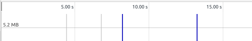

Memory Leak Testing
This is just demo code to show how a memory leak can occur.
This code represents a publisher subscriber model.
If one is not careful, it can be quite easy to forget to unsubscribe.
Forgetting to unsubscribe can result in memory leaking and odd app behavior.
How to Test
- Open this page in Chrome
- Open Chrome Debugger
- Open Memory tab
- Choose Allocation instrumentation on timeline
- Click Start: 
- Test buttons below and observe memory allocation and clean up